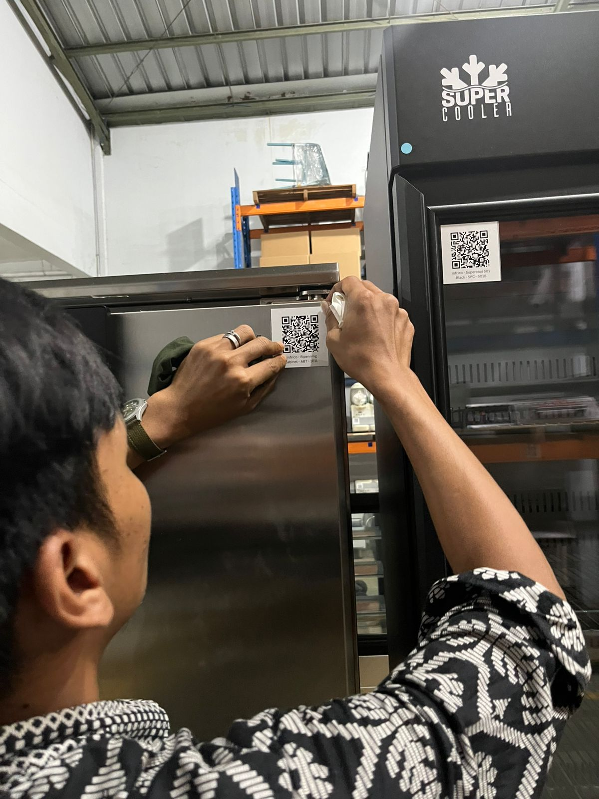
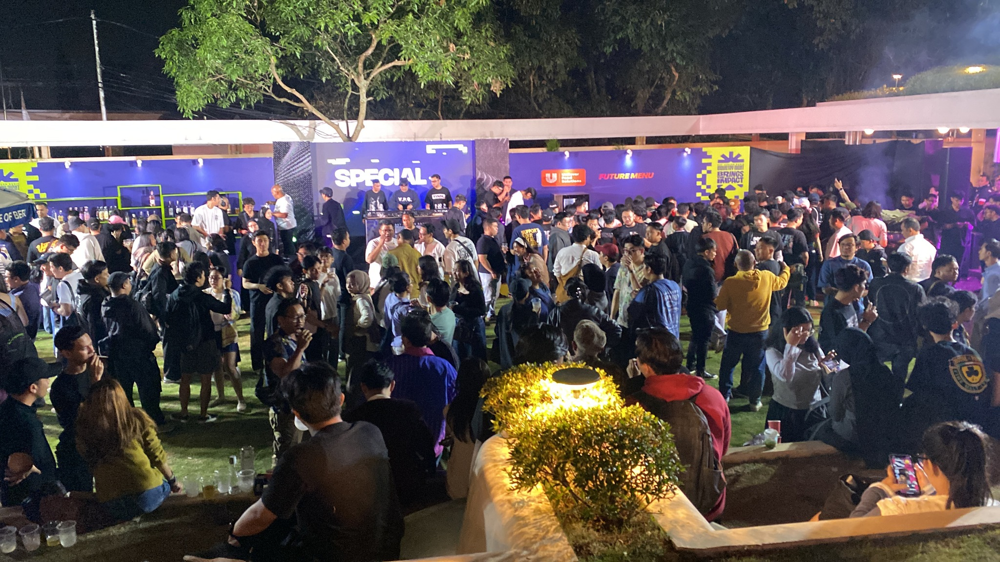
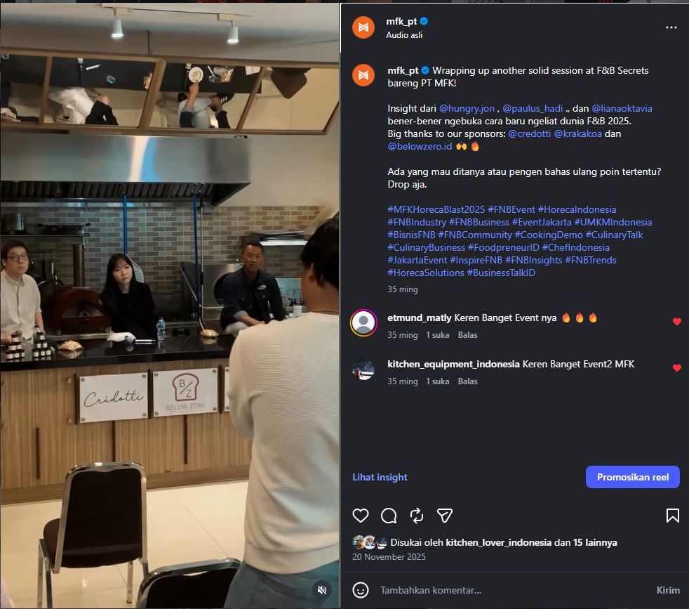
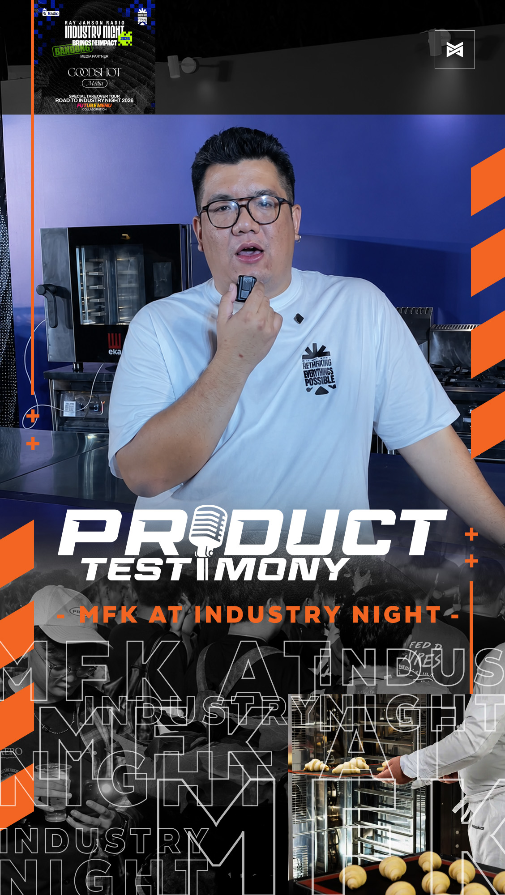
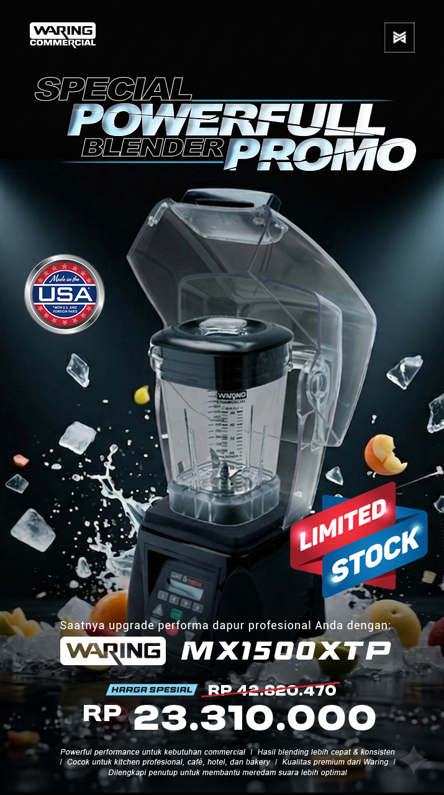

Content & Creative Producer
I build content systems that connect creative execution with business outcomes.
I specialize in end-to-end digital ecosystems that combine video production, SEO-driven websites, digital campaigns, and AI-assisted workflows to support measurable business results.
Working acrossCreative × Digital × Systems
From first idea to production, publishing, website structure, and continuous optimization.
01VideoProduction & editing
02WebsiteWordPress & SEO
03CampaignContent & distribution
04AIWorkflow support
Selected impact
A hybrid profile built through execution.
Public-safe highlights from projects and systems I managed or supported.
About
Creative production backed by digital systems.
My foundation is video production and editing. Over time, my role expanded into managing the broader system around content: website structure, SEO implementation, campaign execution, publishing, and AI-assisted workflows.
I work best where creative output needs to connect with a real commercial objective. That means understanding the audience, organizing the process, collaborating with sales and marketing, and making sure the final asset has a clear next step.
01Creative production
Concept development, scripting, storyboarding, shooting, editing, motion, and platform adaptation.
02Website & SEO
WordPress, Avada Builder, page architecture, taxonomy, on-page SEO, internal linking, and content governance.
03Campaign execution
Meta Business Suite, social publishing, event content, influencer coordination, and cross-channel activation.
04AI-assisted workflow
Research, ideation, scripting, voice support, subtitles, visual planning, and repeatable SOP development.
Selected work
Projects with ownership, not just deliverables.
These case studies focus on role, approach, public-safe proof, and outcome.
CampaignRamadhan Prep Sale ↗
Brand PageTecnoeka Brand Page ↗
Product PageAlfa Forni M90 Product Page ↗
Website Transformation · Project Lead
MFK Website Digital Transformation
Managed the transition from default catalogue-style pages toward a more structured commercial ecosystem across product, brand, category, and campaign pages.
- WordPress and Avada page management
- Taxonomy, on-page SEO, internal linking, and content governance
- SEO-oriented content structure and conversion paths
- AI-supported production standards for scalable execution
OutcomeContributed to improved website structure, organic visibility, and the role of the website as an inbound inquiry channel.


Integrated Campaign · Project Lead
Clearance Sale Campaigns
Built campaign support from zero across landing pages, QR-based product information, promotional content, product demos, and event activation.
OutcomeStronger event visibility, attendance, inquiries, and a coordinated online-to-offline customer experience.

Collaboration Program · PIC
Influencer & Community Collaboration
Handled research, outreach, planning, script alignment, production coordination, and publishing for creator and community-led content.
OutcomeExpanded reach, strengthened event presence, and supported new engagement opportunities through relevant partner collaborations.
BriefResearchScript
Visual PlanProducePublish
ChatGPT · NotebookLM · Google Flow · ElevenLabs
Workflow Design · Internal System
AI-Assisted Content Workflow
Built repeatable workflows for research, ideation, scripting, voice support, subtitles, and planning—while keeping human direction on quality control, strategy, and storytelling.
OutcomeMore consistent execution and less repetitive manual work across content and website production.



Selected Creative Output
Commercial, Event, and Seasonal Content
Examples of product-led, campaign, and AI-assisted visual work produced for digital distribution.
Need more visual work examples?
Browse selected commercial content, motion pieces, and social creatives on Behance.
How I work
A repeatable process, adapted to the problem.
- 01Understand
Clarify business need, audience, platform, and intended action.
- 02Structure
Define narrative, asset requirements, timeline, and responsibilities.
- 03Produce
Shoot, edit, build, write, and coordinate deliverables.
- 04Distribute
Adapt content to platforms, website pages, campaign needs, and user flow.
- 05Improve
Review performance, lead context, and opportunities to optimize.
Experience
Creative foundations, expanded into digital ownership.
2024 — Present
PT Multi Flashindo Karisma
Videographer & Video Editor · Expanded scope across content, website, SEO, AI, and campaigns
Sole PIC for the end-to-end website and content ecosystem, while producing commercial content and supporting integrated marketing initiatives.
Jan — Jul 2024
Lavergne
Videographer & Video Editor
Produced premium visual content aligned with luxury retail presentation standards and adapted deliverables into social-friendly formats.
2022 — 2023
Hurricane XCS Indonesia
Videographer & Video Editor
Produced promotional and product-focused content through shooting, editing, and campaign adaptation.
Jan — Jul 2020
Titan Baking
Photographer & Videographer
Produced high-volume product photography, supported weekly live streaming, and prepared visual assets for the company website.
2014 — 2017
Imprafotografi
Photographer
Built foundational experience in photography, composition, client-facing execution, and production discipline.
Toolkit
Tools support the workflow — not the other way around.
Video & Design
Premiere Pro · CapCut · Canva · After Effects · Photoshop
Website & SEO
WordPress · Avada Builder · Yoast SEO · Basic HTML
AI Workflow
ChatGPT · NotebookLM · Google Flow · ElevenLabs
Digital Marketing
Meta Business Suite · Campaign Publishing · Performance Monitoring